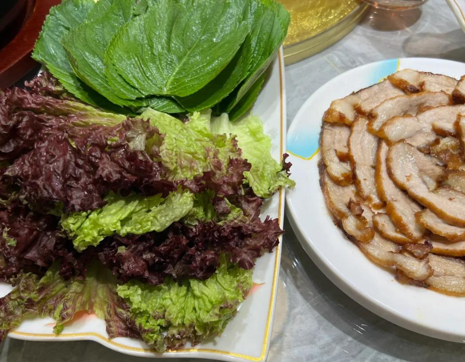
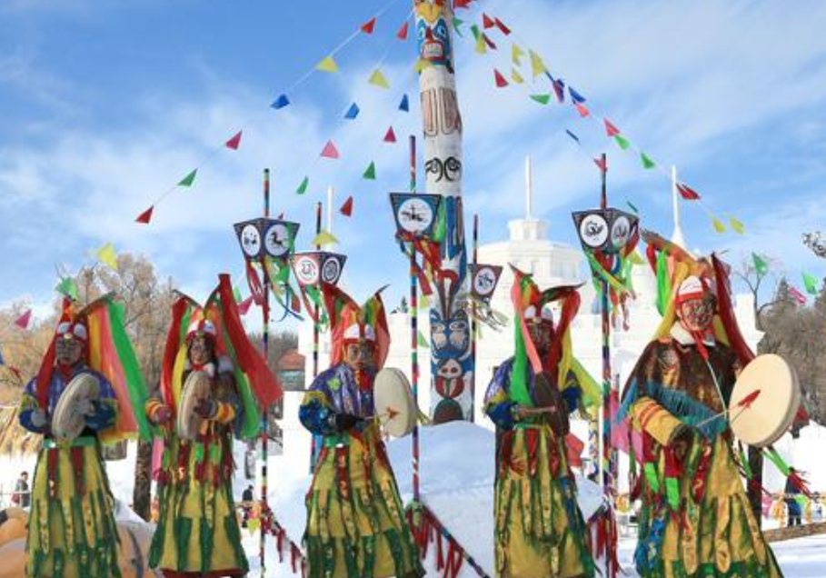
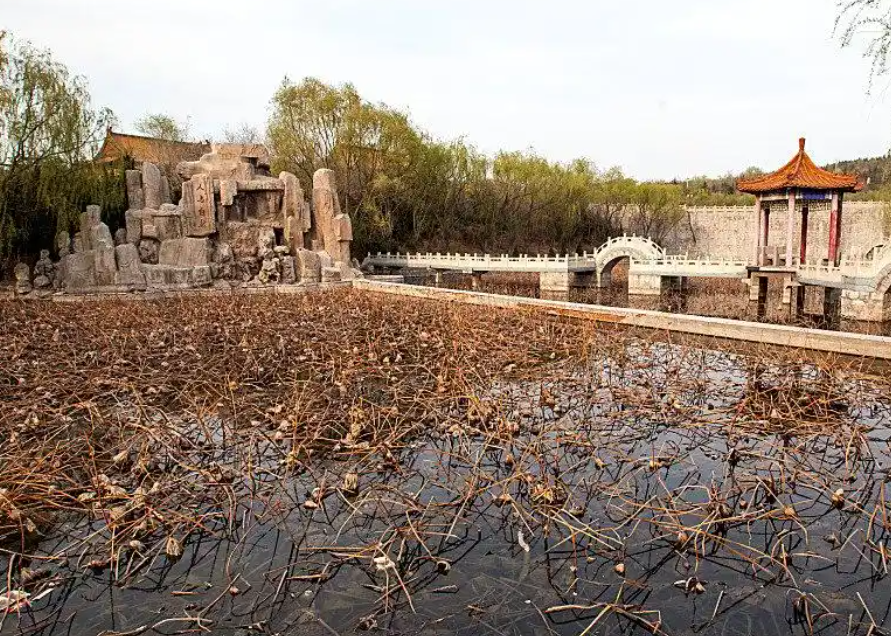
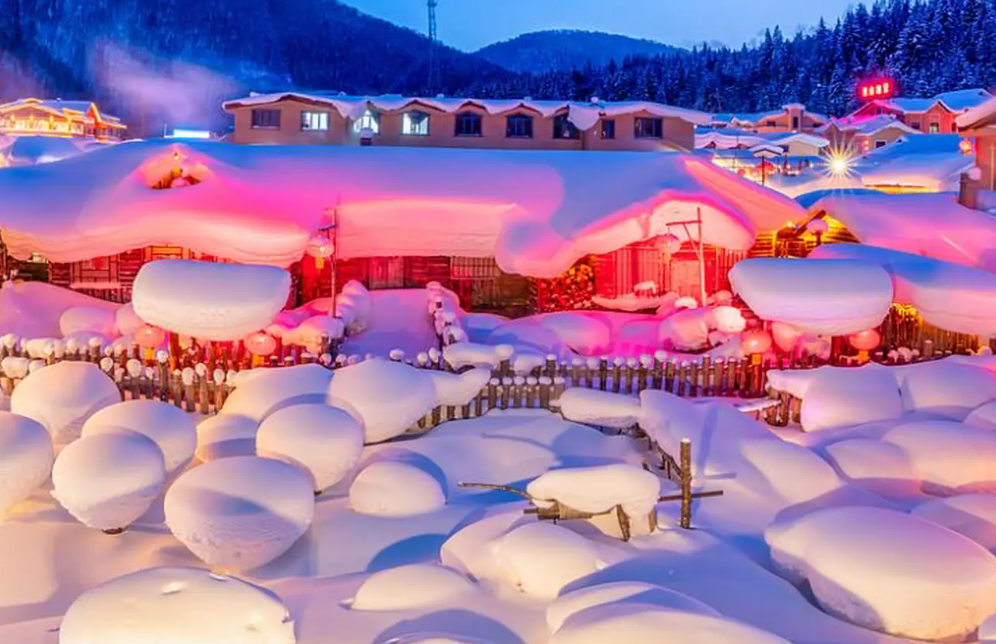

Mudanjiang's Korean cuisine features rice, cold noodles, kimchi, and rice cakes. The cold noodles are renowned for their chewy texture and sweet-and-sour broth, making them a signature summer delicacy. The Korean spicy cabbage making technique has been listed as a provincial intangible cultural heritage.
Major Korean festivals include Seollal (Lunar New Year), Daeboreum (First Full Moon), and Chuseok (Mid-Autumn Festival). Chuseok is the most important, featuring ancestral rites, rice cake making, and tug-of-war. Korean Nongak dance and Janggu drum dance are national intangible cultural heritages.

Manchu Shamanism is the traditional belief of the Manchu people in Mudanjiang. Shamanic rituals incorporate singing, dancing, and blessing ceremonies, forming an essential part of Manchu culture. The Manchu shamanic rituals in Ning'an City have been listed as a provincial intangible cultural heritage.
Traditional Manchu crafts such as paper-cutting, embroidery, and leatherwork are uniquely distinctive. Manchu paper-cutting is known for its bold style and vibrant colors, often depicting hunting, farming, and other daily life scenes.

The Upper Capital Longquan Prefecture ruins of the Bohai State are located in Bohai Town, Ning'an City. As the capital site of the Tang Dynasty's Bohai State, it preserves remnants of the palace city, imperial city, and outer city, with numerous unearthed artifacts making it a crucial site for studying Northeast Asian ancient civilizations.
The three-color glazed pottery of the Bohai State demonstrates exquisite craftsmanship and elegant design, blending Central Plains and Northeast ethnic minority artistic styles. It represents an important branch of Tang Dynasty ceramic art.

Mudanjiang's China Snow Town boasts a unique ice and snow culture. The annual Snow Town Tourism Festival attracts numerous visitors with activities such as snow sculpture viewing, skiing, and snowmobile riding. The traditional wooden cabins covered in thick snow and the Northeast Yangge dance showcase the region's winter charm.
Mudanjiang's ice and snow sculpture art is world-class. The annual ice and snow sculpture competition gathers artists from around the globe. The sculptures feature Mudanjiang's natural landscapes and folk culture as themes, creating vivid and lifelike artworks.